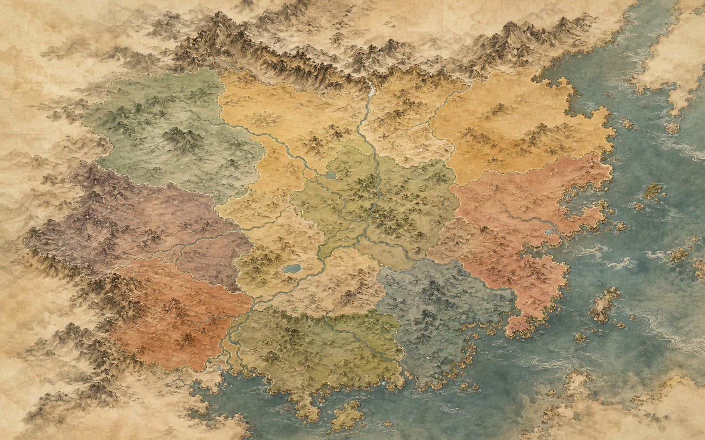

宸
大晟 · 承熙朝
丹宸录
奏折
舆图
官员
党派
案牍
承熙十二年 · 三月初七
辰时
威望
62
国帑
54
民心
58
动态流向
大晟舆图
奏折从何处来，利益向何处去
驿路
案情热度
重置

京师
重
河间府
河工亏空案
急
凉州
西陲军饷案
中
扬州
盐引舞弊案
陇右道
河西道
中州道
山东道
江东道
湖广道
岭南道
奏折流向
流入京师
江南 47
外放钦差
直隶 31
驳回重拟
西陲 18
驿传图例
奏折递送
重大案情
待核案情
大晟十道 · 虚构疆域
◂
承熙十一年 冬
承熙十二年 春 · 本旬报案 28 起
承熙十二年 夏
▸
返回舆图
正式题本 · 通政司验封
重案
民怨沸腾
合折
题本
御前亲启
启封开折
案情脉络
排序：
时间
显示：
全部
阅
知道了
核议
督查
留中存疑
落朱批
仕途流场
百官网络
从籍贯、科第与任官之路辨认利益同盟
全部
荐举
同年
姻亲
攻讦
朝局暗流
党派谱系
党派并非固定标签，官员会因案件与圣意改变依附
内廷案牍
前情归档
旧案、旧批与前后矛盾皆可追溯
本日封匣
翌日再览